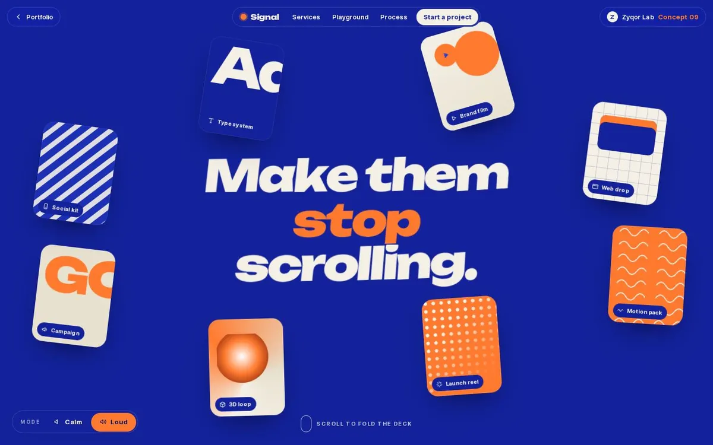

01
Humdinger
Concept3D flagshipShowcase · Pocket music machine
A pocket groovebox you can actually play: the 3D device flips, opens up and makes real sound in your browser.
Open live site (opens in a new tab)(Best) Hand-picked
Hand-picked finished work. Fictional brands, built by hand.
01
Concept3D flagshipShowcase · Pocket music machine
A pocket groovebox you can actually play: the 3D device flips, opens up and makes real sound in your browser.
Open live site (opens in a new tab)
02
ConceptCreative agencyLab 09 · Card fan + physics
A creative agency site with a radial card fan, bento grid and real physics, fronted by a signal character whose eyes follow your cursor.
Open live site (opens in a new tab)Every brand here is invented. Assets are credited on each concept page.
Want one like this for your business?
Start a project